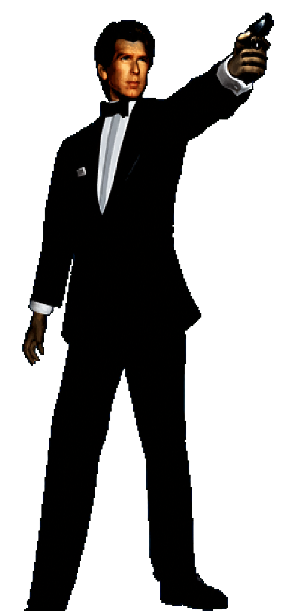

Released · July 2026
Tomorrow Never Dies 6480i Patch
A released 480i patch for Tomorrow Never Dies. Open the project page for the release and technical details.
CY STATION // VIDEO OUTPUT LAB
Choose a patch, follow the work in progress, or head deeper into the archive. CyStation is a home for game modding, preservation, and the best ways to play the games worth keeping.
SELECT A PATCH

Released · July 2026
A released 480i patch for Tomorrow Never Dies. Open the project page for the release and technical details.
01 / 02